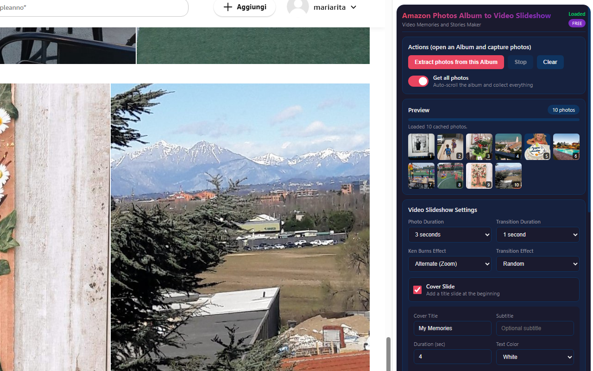
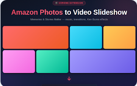

Amazon Photos to Video Slideshow
Turn your Amazon Photos albums into stunning cinematic video slideshows 🎬. With Amazon Photos to Video Slideshow, you can create professional slideshow videos directly from your browser — complete with smooth transitions, Ken Burns camera effects, and background music.
No software to install, no uploads to external servers. The extension opens as a sidebar panel, automatically scrolls through your Amazon Photos album to collect all images, and lets you customize every aspect of your slideshow before generating a downloadable video file.
Smart Photo Extraction 📸 — The extension automatically scrolls through your album, detecting and collecting every photo. It works with Amazon's virtual grid system and fetches the highest resolution thumbnails available. Photos are cached locally for instant preview, and you can choose to extract all photos or only the ones you've manually selected.
Cinematic Effects 🎥 — Choose from 7 transition effects (fade, dissolve, slide in 4 directions, zoom) and multiple Ken Burns camera motions (zoom in/out, pan left/right/up/down, or combinations). Apply them individually, alternate between effects, or randomize for maximum variety. Adjust the intensity from subtle to dramatic.
Background Music 🎵 — Add royalty-free built-in music tracks or upload your own audio file (MP3, WAV, OGG). Adjust volume, enable looping for long slideshows, and enjoy an automatic fade-out at the end for a professional finish.
📋 How to Use
- Install the extension from the Chrome Web Store.
- Open any album on Amazon Photos (amazon.com/photos, amazon.it/photos, etc.).
- Click the extension icon to open the sidebar panel.
- Click "Extract Photos from this Album" to start collecting images.
- Watch as photos are captured and previewed in the sidebar.
- Customize slideshow settings: transitions, Ken Burns, duration, cover slide.
- Optionally add background music from built-in tracks or your own file.
- Click "Create Video Slideshow" to generate your video.
- Preview the result and click "Download Video" to save your .webm file.
📷 Screenshots


✨ Key Features
- Automatic Album Scrolling — Auto-scrolls through your entire album to collect all photos
- High-Resolution Extraction — Fetches the highest available thumbnail resolution from Amazon Photos
- 7 Transition Effects — Fade, dissolve, slide (left/right/up/down), zoom — or random mix
- Ken Burns Camera Effects — Zoom in/out, pan in all directions, combined motions, alternate, or random
- Background Music — Built-in royalty-free tracks or upload your own audio (MP3, WAV, OGG)
- Cover Slide — Add a title slide with custom text, subtitle, colors, and font size
- Resolution up to 4K — Choose 720p, 1080p, 2K, or 4K output resolution
- Frame Rate Control — 24fps (cinematic), 30fps (standard), or 60fps (smooth)
- Adjustable Bitrate — Low to Ultra quality presets (2.5–20 Mbps)
- Fit or Fill Frame — Contain photos within the frame or crop to fill for a cinematic look
- Automatic Fade-Out — Smooth audio and video fade-out at the end
- Select All or Checked Only — Extract every photo or only the ones you've selected
- Live Preview — See thumbnails appear in real time as photos are collected
- Photo Duration Control — 2 to 10 seconds per photo
- Transition Duration — 0.5 to 2 seconds between photos
- Background Color — Choose any color for letterboxing
🎯 Perfect For
- Creating family memory videos from vacation albums
- Birthday, wedding, and anniversary photo slideshows
- Sharing travel memories with friends and family
- Social media content from your photo collections
- Year-in-review highlight reels
- Memorial or tribute videos
- School projects and presentations
- Real estate photo tours
🌍 Supported Amazon Domains
- amazon.com/photos (United States)
- amazon.it/photos (Italy)
- amazon.co.uk/photos (United Kingdom)
- amazon.de/photos (Germany)
- amazon.fr/photos (France)
- amazon.es/photos (Spain)
- amazon.co.jp/photos (Japan)
- amazon.ca/photos (Canada)
- amazon.com.au/photos (Australia)
- amazon.in/photos (India)
- amazon.com.br/photos (Brazil)
- amazon.nl/photos (Netherlands)
- amazon.com.mx/photos (Mexico)
💡 Tips for Best Results
- Organize your album first — arrange photos in the order you want them to appear in the video
- Use "Fill Frame" mode for a cinematic widescreen look (photos will be cropped to fill)
- Use "Random" transitions for more variety in longer slideshows
- Increase scroll delay (800–1200ms) if you have a slow connection or very large albums
- Try different Ken Burns combinations — "Alternate (All)" cycles through zoom and pan effects
- Use High or Ultra bitrate for the best visual quality when sharing on social media
- Convert WebM to MP4 with any free online converter if your device doesn't support WebM
🔓 Free & PRO Version
The FREE version includes all features with a small "Demo Watermark" on the generated video. Purchase a PRO unlock code to remove the watermark and create clean, professional videos. The PRO upgrade is a one-time purchase — no subscriptions, no recurring fees.
🔒 Privacy & Security
- Works entirely in your browser — no uploads to external servers
- Your photos and videos stay private on your computer
- No account required
- No data collection, analytics, or tracking
With Amazon Photos to Video Slideshow, creating beautiful memory videos has never been easier. Whether it's a family vacation, a birthday party, or a year-in-review highlight reel, this extension gives you cinematic results with just a few clicks — right from your browser. 🎬
⬇️ Download from Chrome Web Store